地政学
大阪は東京の対抗軸というだけでなく、瀬戸内海、近畿、東アジア航路を結ぶ西日本の結節点である。湾岸、空港、新幹線、在阪総領事館、京都と神戸への近さが、政治、観光、物流、災害対応を一体の都市圏にしている。

🇯🇵 日本 / 東アジア / World City Atlas
大阪湾、商都の歴史、関西経済、港湾物流、食と笑い、祭礼、住宅、観光、防災が重なる日本西部の中核都市。
都市の骨格
大阪湾、淀川、上町台地、梅田、難波、堺、神戸、京都が短い距離で結ばれ、商業、物流、文化、住宅が濃く重なる。
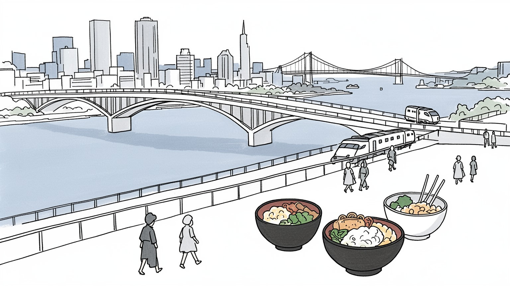
大阪は東京の対抗軸というだけでなく、瀬戸内海、近畿、東アジア航路を結ぶ西日本の結節点である。湾岸、空港、新幹線、在阪総領事館、京都と神戸への近さが、政治、観光、物流、災害対応を一体の都市圏にしている。
商社、医薬、化学、機械、食品、家電、建設、港湾物流、観光、飲食が厚く、中小企業の分業も強い。華やかな都心の背後で、配送、清掃、介護、調理、町工場の労働が都市の速度を毎日支え続けている。今も大切だ。
四天王寺、住吉大社、今宮戎、天神祭、文楽、上方落語、漫才、商店街の祭礼が、商いと信仰を近づけてきた。京都や奈良の古代文化、神戸の港町文化とも接続し、関西らしい多層の公共文化を作る街だ。今も大切だ。
梅田、難波、天王寺、道頓堀、黒門市場、大阪城、ベイエリア、古い長屋街が近く、食べ歩きと通勤が交差する。便利な鉄道網の一方で、家賃、暑さ、高齢化、インバウンド混雑も日常の課題になる街だ。今も大切だ。
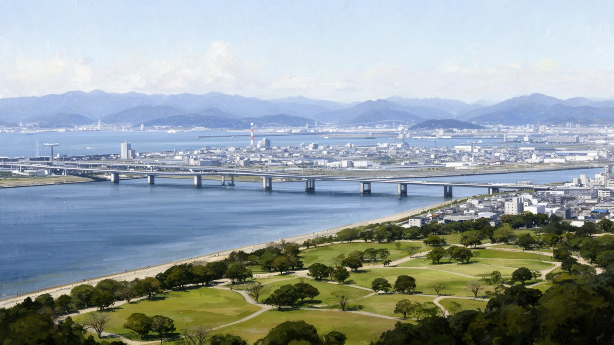
大阪は、海に向かって開いた低地と、古くから集落や寺社が置かれた上町台地の関係から読むと分かりやすい。淀川、大和川、寝屋川、道頓堀川、土佐堀川が市街地を刻み、大阪湾の奥に港、工場、倉庫、住宅、遊園地、埋立地を集めてきた。水の都と呼ばれる華やかな印象の背後には、洪水を抑える治水、橋を架け替える土木、堀を埋めたり再生したりする都市計画がある。梅田は鉄道の結節点として北へ広がり、難波や心斎橋は南の商業と娯楽を担い、天王寺や阿倍野は台地と南大阪への入口になる。湾岸部は物流、工業、観光施設、住宅再開発が混在し、関西国際空港や神戸港とも役割を分け合う。地形は観光の背景ではなく、地価、浸水リスク、通勤、橋の混雑、商店街の位置まで左右する条件である。大阪を歩くと、近世の運河、近代の鉄道、戦後の高速道路、現在の再開発が同じ水際に重なって見える。都市の強さは、海と川を使い続けながら、低地に住む危うさも管理してきた点にある。さらに湾を挟んだ淡路島、泉州、阪神間との距離感が、物流、通勤、観光の選択肢を増やす。橋の名前や川沿いの地名をたどるだけでも、大阪が陸の中心ではなく水路の結び目として発達したことが見えてくる。水辺の公園や遊歩道が増えた今も、川は景観だけでなく、気温を和らげ、イベントを受け止め、地域を結ぶ公共空間として働いている。
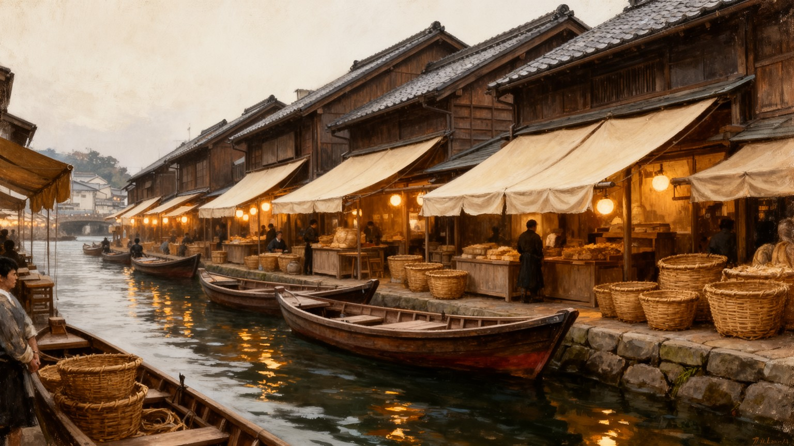
大阪の商都としての性格は、単に店が多いということではない。近世の大坂は米、綿、油、薬、金属、出版、金融が集まる流通都市で、蔵屋敷、問屋、船場の商家、両替商、堂島の米市場が全国の経済を動かした。武士の城下町でありながら、町人の会計、信用、倹約、寄付、学問、芝居が都市文化を形づくった点に独自性がある。船場や北浜には、商いの規律と近代金融の記憶が残り、道頓堀や千日前には娯楽と飲食の歴史が積み重なる。明治以後は繊維、化学、機械、薬品、食品が発展し、商社や百貨店、私鉄、新聞、劇場が近代都市の顔を作った。大阪の気安さや値切りのイメージは軽く語られがちだが、その奥には薄利を計算し、信用を守り、町内で助け合う実務の文化がある。商都の歴史は、華やかな看板だけでなく、帳簿、倉庫、丁稚奉公、寄席、船着き場、金融街、商店街の人間関係でできている。現在の大阪が観光と再開発で変わっても、物を動かし、人をもてなし、交渉で関係を作る都市の習慣は、日常の言葉遣いや店の距離感に残っている。問屋街や市場では、顔を合わせて値を決める感覚と、長い取引を守る慎重さが同時に働く。商いは冷たい計算だけでなく、失敗した相手をどう支えるかという地域の倫理も含んでいた。その記憶は、今の起業、個人店、商店街の再生にも静かに影響している。今も。
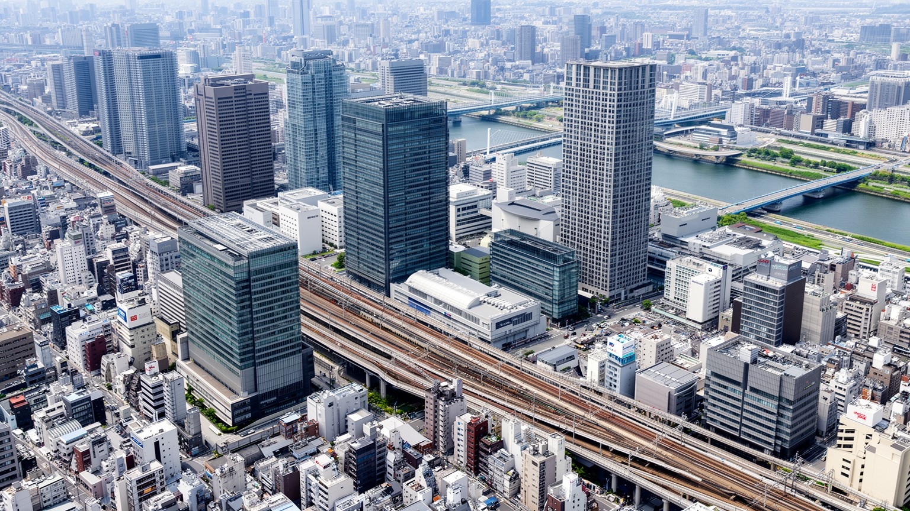
大阪の経済は、東京の縮小版ではなく、関西全体の分業をまとめる都市型経済である。梅田や中之島には金融、法律、メディア、本社機能が集まり、淀屋橋から本町にかけて商社、繊維、薬品、広告、建設の業務が連なる。道修町の製薬、東大阪の町工場、堺の化学や金属、北摂の研究機関、京都の大学と電子部品、神戸の医療産業や港湾が、短い移動圏の中で接続する。大企業だけでなく、金型、部品、印刷、食品加工、包装、物流、店舗運営を担う中小企業の厚さが大阪の底力である。一方で、製造業の海外移転、商店街の空洞化、後継者不足、非正規雇用、観光依存、オフィス再編は都市の課題にもなっている。高収入の専門職と、飲食、介護、清掃、警備、配送、宿泊の労働者が同じ鉄道で通い、同じ都心を支える構図は見逃せない。大阪経済を読むには、GDPや本社数だけでなく、町工場の技能、卸売の信用、私鉄沿線の消費、大学発の研究、外国人労働者の生活を同時に見る必要がある。関西の多極性は弱さにも強さにもなる。中心が一つに固定されないからこそ、都市圏は多様な産業と文化を組み合わせて生き延びてきた。新幹線と空港が東京やアジアへ伸びる一方、日々の取引は近所の工場や商店にも根を張る。世界市場と地元の信用が重なっていることが、大阪経済の読みどころである。数字の奥には人の移動がある。
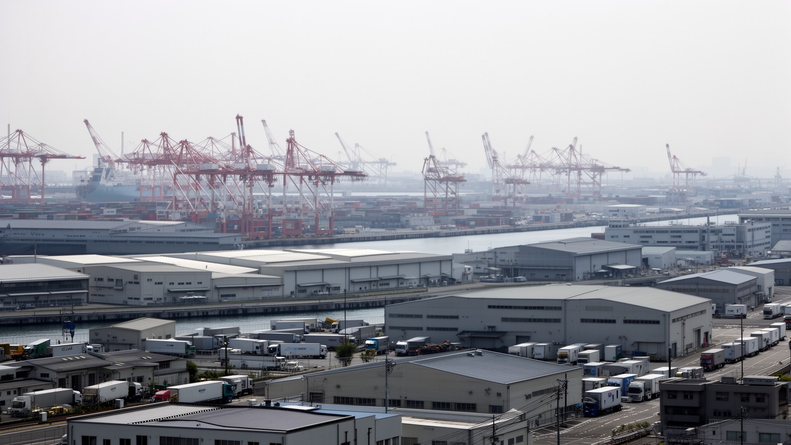
大阪港は、観光客が海遊館やベイエリアを思い浮かべる場所であると同時に、関西の日常消費を支える物流の入口である。コンテナ、フェリー、冷蔵倉庫、食品市場、工場、配送センター、高速道路、鉄道貨物が湾岸に集まり、海外から来た商品や国内の荷物を小売店、飲食店、工場、家庭へ動かしている。神戸港や堺泉北港、関西国際空港と役割を分けながら、大阪港は都市圏の胃袋と工場を支える。港湾労働は目立ちにくいが、荷役、通関、検査、倉庫管理、トラック運転、船舶代理、保守、警備、清掃の仕事がなければ、都心の便利さは止まる。湾岸には工業地帯、下水処理場、発電施設、ごみ処理、埋立地、テーマパーク、住宅開発が近接し、土地利用の緊張も大きい。物流効率を高めるほど大型車の交通、騒音、排気、労働時間の問題が出る一方、災害時には港と道路の復旧が都市全体の生命線になる。大阪を食と買い物の都市として楽しむなら、その品物がどの港を通り、どの倉庫で保管され、誰の夜間労働によって棚へ届くのかも見たい。港は水辺の景色ではなく、都市の日常を裏側から組み立てる巨大な作業場である。港湾の自動化や人手不足は、便利な配送を当然視する都市に問いを投げる。早く安く届く商品ほど、見えない現場の負担を増やしていないかを考える必要がある。物流は暮らしの鏡でもある。
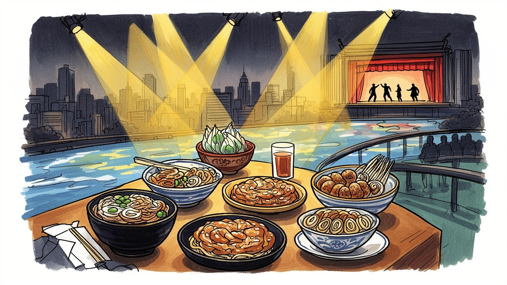
大阪の食文化は、たこ焼きやお好み焼きだけで完結しない。うどん、出汁、寿司、串カツ、肉吸い、喫茶店、百貨店の食料品売場、黒門市場、商店街の惣菜、立ち飲み、町中華、韓国料理、喫茶文化が、働く人の時間と財布に合わせて発展してきた。外食の気軽さは、商人の町で客をもてなし、短い休憩に腹を満たし、会話で距離を縮める都市の作法でもある。笑いの文化も同じく、単なる娯楽ではない。上方落語、漫才、吉本の劇場、テレビ、ラジオ、商店街の掛け合いは、権威を少しずらし、失敗を言葉に変え、見知らぬ人同士の緊張をほぐしてきた。もちろん大阪らしさの強調は、ステレオタイプとして消費される危険もある。すべての住民が大声で陽気なわけではなく、外国人住民、若い単身者、高齢者、静かな住宅地の暮らしもある。食と笑いを都市文化として読むなら、観光用の派手な看板だけでなく、仕込みをする早朝の店、劇場の裏方、修業する若手、家賃に悩む個人店、地域の常連が作る関係を見たい。大阪の親しみやすさは、軽さではなく、厳しい商売と労働の中で人をつなぐ実用的な知恵として育ってきた。観光客に人気の味も、住民にとっては帰宅途中の夕食や、給料日前の安心になる。笑いも食も、都市の緊張をやわらげる公共的な技術として働いている。だからこそ、店の継承や劇場の維持は文化政策でもある。
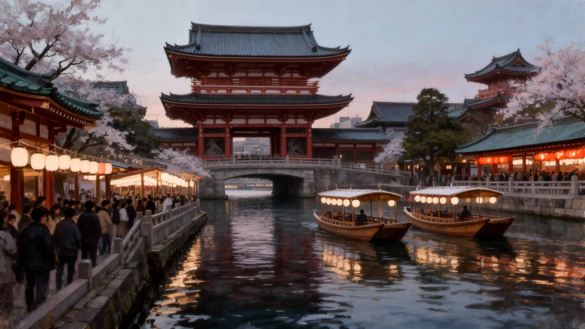
大阪の宗教景観は、観光写真よりも日常の近さに特徴がある。四天王寺は古代からの仏教都市の記憶を持ち、住吉大社は海上交通と商いの守護を語り、今宮戎は商売繁盛の祈りを大勢の参拝者に開く。大阪天満宮の天神祭は川と船と花火を使い、都市の水辺を祭礼の舞台に変える。寺社だけでなく、地蔵、町内の祠、墓地、教会、モスク、在日コリアンの信仰空間、外国人住民の集会所も、都市の多様な祈りを支えている。祭礼は伝統を保存するだけではない。町会、商店街、学校、企業、警察、交通機関、露店、観光客が関わり、地域の世代交代や担い手不足を映す場でもある。商いの都市では、祈りと取引が近く見えることがあるが、それは単純な利益信仰ではなく、不確実な商売、病気、受験、家族、災害に向き合う生活の実感である。大阪を読む時、道頓堀や梅田の明るさだけを見ると、祈りの静かな時間を見落とす。寺社の境内、朝の清掃、祭りの準備、参道の小さな店、地域の寄付が、都市を長い時間の中に置いている。急速に変わる街だからこそ、祭礼は人々に同じ場所へ戻る理由を与えている。担い手が減る地域では、祭りの規模や運営方法を変えながら続ける工夫も必要になる。伝統は固定された展示物ではなく、住民が毎年調整して守る共同作業である。祈りの場を残すことは、地域の記憶を残すことでもある。
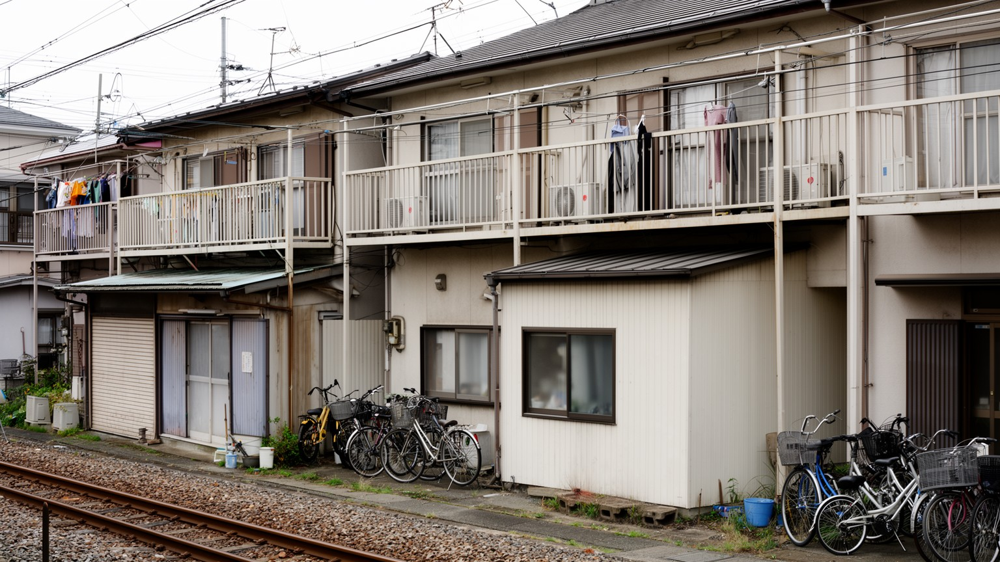
大阪の暮らしは、都心の高層住宅だけでなく、私鉄と地下鉄の沿線、長屋、団地、商店街、工場の近い住宅地によって支えられている。阪急、阪神、京阪、近鉄、南海、JR、地下鉄が放射状に広がり、北摂、阪神間、東大阪、堺、奈良、京都、和歌山方面を日常の通勤圏にする。駅前にはスーパー、学習塾、診療所、居酒屋、保育園が集まり、少し歩けば町工場や倉庫、古い木造住宅が残る地区もある。家賃は東京より抑えられる場所が多いが、都心再開発や観光地周辺では価格上昇が進み、単身高齢者、若い家族、外国人労働者、低所得世帯には住まいの不安がある。西成、浪速、生野などは、労働、貧困、在日コリアンの歴史、外国人住民、福祉、観光化が複雑に重なる地区で、外からの単純な印象だけでは語れない。大阪の労働は、オフィス、工場、店舗、港、介護施設、ホテル、建設現場、清掃現場に広がり、早朝と深夜の移動が都市を動かす。暮らしやすさを考えるには、電車の本数や食の安さだけでなく、住宅の断熱、耐震、エレベーター、見守り、保育、外国語相談、歩道の安全も見る必要がある。大阪の生活圏は、便利さと脆さが同じ路地にある。近所付き合いの濃さは支えになる一方、孤立した高齢者や新しく来た住民には入りにくさにもなる。住まいと労働を一緒に見ることで、都市の本当の使いやすさが見えてくる。
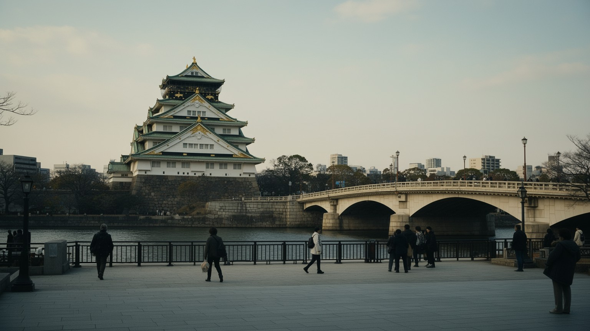
大阪観光は、道頓堀の看板や食べ歩きだけでなく、大阪城、中之島、四天王寺、住吉大社、通天閣、新世界、天王寺、空堀、船場、ベイエリア、万博記念公園まで広がる。大阪城は豊臣秀吉の権力と徳川による再建、近代軍事施設、戦災、戦後復興の記憶を重ねる場所で、天守の華やかさだけでは読み切れない。中之島には公会堂、図書館、銀行、橋、川辺の公園が並び、近代商業都市の公共性を感じさせる。道頓堀は演劇、飲食、観光の舞台であり、派手な広告の背後に芝居町の歴史がある。新世界や通天閣は庶民的な観光地として親しまれる一方、近隣の労働と福祉の歴史も抱える。観光業はホテル、飲食、交通、案内、清掃、土産物、舞台芸能の雇用を生むが、インバウンドの集中は混雑、民泊、家賃、住民生活との摩擦を生みやすい。大阪の遺産を歩く時は、古いものを保存するだけでなく、それを誰の記憶として語り、現在の商売や暮らしとどう折り合うのかを考えたい。京都や奈良への玄関でもある大阪は、自身の歴史が軽く見られがちだが、都市の地層は深い。笑いと食の入口から入っても、城、川、寺社、戦災、再開発へ視線を広げると、旅は立体的になる。短い滞在でも、朝の市場、昼の川辺、夜の劇場を組み合わせると、観光と生活が近い都市であることが分かる。名所は写真の背景ではなく、働く人と住む人の時間の上に成り立っている。
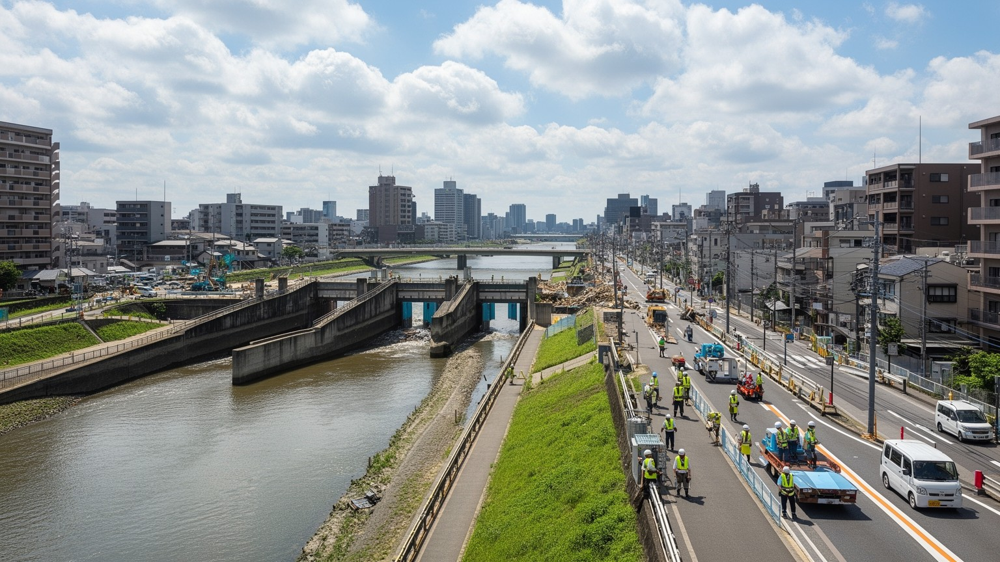
大阪は瀬戸内寄りの比較的穏やかな気候に見えるが、低地の大都市として水害、台風、高潮、地震、猛暑に備えなければならない。淀川や大和川の流域には広い市街地があり、湾岸の埋立地や地下街、地下鉄、ビルの地下設備は浸水に弱い。過去の室戸台風やジェーン台風の記憶、南海トラフ地震への備えは、堤防、水門、排水機場、避難計画、建物の耐震化を都市の重要課題にしている。梅田や難波の地下空間は便利で涼しい歩行ネットワークだが、豪雨時には水が流れ込む危険もある。夏の蒸し暑さは、屋外労働者、配達員、建設作業員、高齢者、エアコンを十分に使えない世帯に負担をかける。防災は巨大な土木だけではない。多言語の避難情報、福祉施設の移送、学校の訓練、町会の連絡網、外国人住民への支援、古い木造密集地の火災対策が欠かせない。大阪の都市力は、危険を完全に消すことではなく、低地に暮らす現実を理解し、弱い立場の人ほど早く守る仕組みを作ることにある。水の都という魅力は、水と向き合う技術と記憶に支えられている。観光客でにぎわう水辺も、非常時には都市の弱点と生命線の両方になる。地下街の案内、駅の止水板、避難ビルの表示、夏の給水場所のような細部も、普段は目立たない都市の安全装置である。防災は行政だけでなく、商店、学校、ホテル、住民が日々更新する共同の仕事だ。
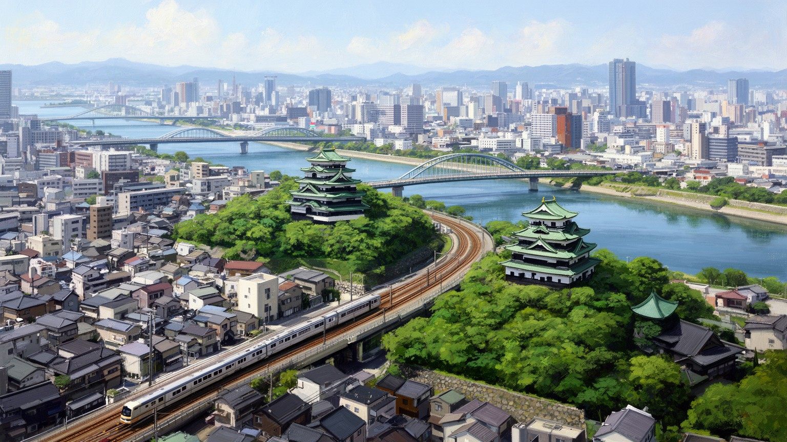
大阪を読むには、道頓堀の派手な看板や食の楽しさだけでなく、湾、川、商都の歴史、関西経済、港湾物流、寺社、祭礼、住宅、労働、災害リスクを同じ地図に置く必要がある。東京と比べて語られることが多い都市だが、大阪の重要性は対抗意識だけでは説明できない。瀬戸内海と畿内を結ぶ位置、京都や神戸との近さ、中小企業の分業、私鉄沿線の生活文化、商人の信用、庶民的な娯楽、在日コリアンや外国人住民の歴史が、独自の厚みを作ってきた。魅力は気軽さと密度にあり、課題はその密度の中で貧困、高齢化、観光混雑、老朽住宅、水害、暑さをどう扱うかにある。食と笑いは都市を明るく見せるが、その明るさは働く人の長い時間、商店の経営努力、地域の支え合いに依存している。大阪の未来は、再開発や国際イベントの成功だけでなく、古い商店街、町工場、福祉の現場、港湾労働、寺社の祭礼、鉄道沿線の住宅地が持続できるかで決まる。旅行者にとっても住民にとっても、大阪は分かりやすい顔と複雑な背景を同時に持つ都市である。その二つを分けずに見る時、商いの街は日本西部の社会を映す大きな窓になる。駅前の再開発だけで都市を判断せず、川沿いの倉庫、町工場の音、寺の朝、夜の市場、郊外の団地まで歩くと、大阪の重心は一つではないことが分かる。多くの小さな中心が連なっている点に、この都市の粘り強さがある。